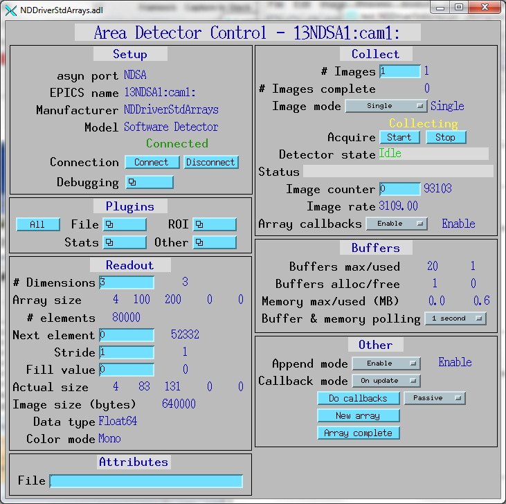
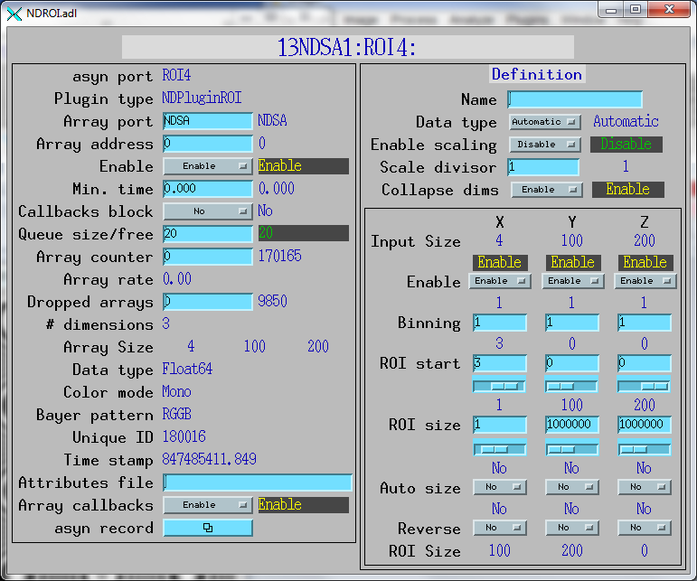
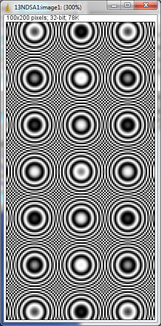

NDDriverStdArrays
- author:
Mark Rivers (University of Chicago)
Table of Contents
Introduction
This is an EPICS areaDetector driver that allows any EPICS Channel Access client to create NDArrays in an areaDetector IOC. It is the logical inverse of the NDPluginStdArrays, which converts NDArrays in an IOC into standard EPICS waveform records for use by Channel Access clients. The NDPluginStdArrays plugin also writes to additional records to describe the array structure. The NDDriverStdArrays driver receives EPICS waveform records from Channel Access clients and converts them to an NDArray in the IOC. The clients must also write to additional EPICS records to define the structure of the NDArray. It is similar in concept to the pvaDriver which receives EPICS V4 NTNDArrays over the network and converts them to NDArrays in the IOC. pvaDriver only works with EPICS V4 PVAccess clients, while NDDriverStdArrays works with EPICS V3 Channel Access clients.
NDDriverStdArrays is based on an earlier driver called ADSoft written by David Vine from LBNL. This driver generalizes ADSoft to support any number of dimensions and any input waveform data type.
One use-case for this driver may be to receive data from the EPICS sscan record. By putting such data into an areaDetector IOC it could then be saved with the standard file saving plugins. It could also be processed with ROI plugins, and then visualized with the standard areaDetector viewers like ImageJ.
This driver inherits from ADDriver. It implements many of the parameters in asynNDArrayDriver.h and in ADArrayDriver.h. It also implements a number of parameters that are specific to this driver. The NDDriverStdArrays class documentation describes this class in detail.
The driver receives 1-D arrays, normally from an EPICS waveform record. The NDimensions record controls the actual number of dimensions to use when creating the NDArray. The Dimensions array record controls the actual size of each of the NDimensions dimensions. The only limit on the number of dimensions is the ND_ARRAY_MAX_DIMENSIONS value defined in ADCore. This is normally 10. The ColorMode record can be used to define the color mode (Mono, Bayer, RGB1, RGB2, or RGB3) of the NDArray. This does not affect the operation of the driver, so the data in the waveform record must be in the correct order for the specified color mode.
The data type of the NDArray is controlled by the DataType record. It can be any of the datatypes Int8, UInt8, Int16, UInt16, Int32, UInt32, Float32, or Float64. The datatype (FTVL) of the EPICS waveform record can also be any of the types CHAR, UCHAR, SHORT, USHORT, LONG, ULONG, FLOAT, or DOUBLE. The DTYP of the waveform record can be any of asynInt8ArrayWfOut, asynInt16ArrayWfOut, asynInt32ArrayWfOut, asynFloat32ArrayWfOut, or asynFloat64ArrayWfOut. The driver does any required type conversion between the waveform record data and the NDArray data.
The driver has 2 modes of operation, AppendMode=Disable and AppendMode=Enable. When AppendMode is Disable then each write to the waveform record will generate a complete NDArray. The first element of the waveform record will be placed in the first element of the NDArray. Generally the number of elements written should be equal to the total number of elements in the NDArray. If it is greater then excess elements will be discarded. If it is fewer then the NDArray will be zero-padded.
When AppendMode=Enable then the waveform record can contain just part of the NDArray data, and data can be appended by multiple writes to the waveform record to construct the complete NDArray. In append mode the following records are used to control the operation of the driver. These records have no effect if AppendMode=Disable.
NewArray This record must be processed before sending data for a new NDArray.
NextElement This record can be used to define the location in the NDArray in which to write the data on the next waveform record write. It is set to 0 when NewArray is processed, and is incremented by the number of elements in the waveform record each time the waveform record is written. Thus if the data are being written in the logical order of the NDArray then this record does not need to be written. This record is useful when the should not be written in the natural order of the NDArray data.
Stride This record can be used to define the increment in the NDArray index for each successive element in the waveform record. Data is copied from the waveform record to the NDArray as follows:
NDArray[NextElement + i*Stride] = waveform[i]
The default value of Stride is 1.
ArrayComplete This record must be processed to tell the driver that the NDArray is complete and that no more waveform records will be written to this NDArray.
The CallbackMode record controls when the driver does callbacks to plugins. In append mode it may not be desireable to do callbacks each time the waveform record is written, since that could happen thousands of times per second if only small parts of the NDArray are written on each call. The CallbackMode record has 3 choices:
OnUpdate The callbacks will be done each time the NDArray is updated, i.e. each time the waveform record is written.
OnComplete The callbacks will be done when the NDArray is complete. This is equivalent to OnUpdate when AppendMode=Disable, but when AppendMode=Enable then the callbacks will only happen after the ArrayComplete record is processed.
OnCommand The callbacks are only called when the DoCallbacks record is processed. This allows Channel Access clients to control when the callbacks are done. The DoCallbacks record will also cause the callbacks to be done when CallbackMode is OnUpdate or OnComplete.
Standard areaDetector parameters
The following table describes how the NDDriverStdArrays driver implements some of the standard driver parameters. The Acquire, ImageMode, NumImages, ImageCounter, and ArrayCallbacks records are handled in the standard way. The trigger, temperature, acquire time, and gain related records are not implemented.
Implementation of Parameters in asynNDArrayDriver.h and ADDriver.h, and EPICS Record Definitions in ADBase.template and NDFile.template |
||
|---|---|---|
Parameter index variable |
EPICS record name |
Description |
NDNDimensions |
$(P)$(R)NDimensions |
The number of dimensions in the NDArray to be created. Must be set before the waveform record is written. |
NDDimensions |
$(P)$(R)Dimensions |
An array containing the dimensions of the NDArray to be created. Must be set before the waveform record is written. |
NDDataType |
$(P)$(R)DataType |
The data type of the NDArray to be created. Must be set before the waveform record is written. |
NDColorMode |
$(P)$(R)ColorMode |
The color mode of the NDArray to be created. Must be set before the waveform record is written. |
N.A. |
$(P)$(R)ArraySize[N], N=0, 9. |
The $(P)$(R)Dimensions[0-9] values, extracted with a subarray record. These allow for display of the NDArray dimensions. |
N.A. |
$(P)$(R)ArraySize[N]_RBV, N=0, 9. |
The $(P)$(R)Dimensions_RB[0-9] values, extracted with a subarray record. These allow for display of the dimensions of the currently defined data in the NDArray. These will increment when AppendMode=Enable. |
NDDriverStdArrays specific driver parameters
The NDDriverStdArrays driver implements the following parameters in addition to those in asynNDArrayDriver.h and ADDriver.h. The database file is NDDriverStdArrays.template.
Parameter Definitions in NDDriverStdArrays.h and EPICS Record Definitions |
||||||
|---|---|---|---|---|---|---|
Parameter index variable |
asyn interface |
Access |
Description |
drvInfo string |
EPICS record name |
EPICS record type |
NDSA_AppendMode |
asynInt32 |
r/w |
Append mode. Choices are Disable (0) and Enable (1). See the description above. |
NDSA_APPEND_MODE |
$(P)$(R)AppendMode, $(P)$(R)AppendMode_RBV |
bo, bi |
NDSA_NumElements |
asynInt32 |
r/o |
The total number of elements in the NDArray. |
NDSA_NUM_ELEMENTS |
$(P)$(R)NumElements_RBV |
longin |
NDSA_NextElement |
asynInt32 |
r/w |
The next element in the NDArray to write to when AppendMode=Enable. See the description above. |
NDSA_NEXT_ELEMENT |
$(P)$(R)NextElement, $(P)$(R)NextElement_RBV |
longout, longin |
NDSA_Stride |
asynInt32 |
r/w |
The stride to use for the NDArray index when copying data from the waveform record to the NDArray. See the description above. |
NDSA_STRIDE |
$(P)$(R)Stride, $(P)$(R)Stride_RBV |
longout, longin |
NDSA_FillValue |
asynFloat64 |
r/w |
The fill value to use for the NDArray. The NDArray is set to FillValue when AppendMode=Enable and NewArray is processed, or when AppendMode=Disable and the number of elements in the waveform record is fewer than the number of elements in the NDArray. |
NDSA_FILL_VALUE |
$(P)$(R)FillValue |
ao |
NDSA_NewArray |
asynInt32 |
r/w |
Tell the driver to start a new NDArray when AppendMode=Enable. See the description above. |
NDSA_NEW_ARRAY |
$(P)$(R)NewArray |
bo |
NDSA_ArrayComplete |
asynInt32 |
r/w |
Tell the driver that the current NDArray is complete when AppendMode=Enable. See the description above. |
NDSA_ARRAY_COMPLETE |
$(P)$(R)ArrayComplete |
bo |
NDSA_CallbackMode |
asynInt32 |
r/w |
Callback mode. See the description above. Choices are:
|
NDSA_CALLBACK_MODE |
$(P)$(R)CallbackMode, $(P)$(R)CallbackMode_RBV |
mbbo, mbbi |
NDSA_DoCallbacks |
asynInt32 |
r/w |
Processing this record forces the driver to do callbacks to plugins. |
NDSA_DO_CALLBACKS |
$(P)$(R)DoCallbacks |
bo |
N.A. |
N.A. |
r/w |
This record can periodically process the DoCallbacks record by setting is SCAN field. It is disabled when $(P)$(R)Acquire is 0. |
N.A. |
$(P)$(R)DoCallbacksScan |
bo |
NDSA_ArrayData |
asynXXXArray |
r/w |
Waveform record containing the input data. The database requires 3 additional macros for this record:
|
NDSA_ARRAY_DATA |
$(P)$(R)ArrayIn |
waveform |
Configuration
The NDDriverStdArrays driver is created with the NDDriverStdArraysConfig command, either from C/C++ or from the EPICS IOC shell:
NDDriverStdArraysConfig(const char *portName,
int maxBuffers, size_t maxMemory,
int priority, int stackSize)
There an example IOC boot directory and startup script (iocBoot/iocNDDriverStdArrays/st.cmd) provided with areaDetector.
Screenshots
The following show the MEDM screens that are used to control the NDDriverStdArrays driver.
NDDriverStdArrays.adl
NDDriverStdArrays.adl is the screen used to control this driver.
{kind=link}
Unit tests
The src/Python_tests and src/IDL_tests directories contain a number of tests of the driver. The IDL tests are run by opening IDL and typing for example:
IDL> .run MonoOverwrite
The Python tests can all be run by typing:
python test_NDDriverStdArrays.py
Individual tests can be run by typing for example:
python test_NDDriverStdArrays.py TestNDDriverStdArrays.testDataTypes
When running the tests it is useful to be displaying the images, for example in ImageJ. It is helpful to press the ImageJ “Auto” contrast button as the tests are run, since they have different data ranges.
test_NDDriverStdArrays.py contains the following tests:
testDataTypes This test creates NDArrays of size 256x768 for each allowed NDArray data type and corresponding Python data type. It writes the complete array with a single channel access write to the waveform record, i.e. with AppendMode=Disable. After writing each array it reads it back to verify that the data read matches the data written.
testDataTypesAppend This test is the same as testDataTypes except that the data are written with AppendMode=Enable. Each channel access write to the waveform record writes “ystep” rows of the image. “ystep” is set to 1 in the code, but can be edited to test writing multiple rows at once. After writing each complete array it reads it back to verify that the data read matches the data written.
testContinuousMono This test writes 50 NDArrays of size 500x800 with ImageMode=Continuous, ColorMode=Mono, and AppendMode=Disable. The images are a 2-D damped sine wave, where the frequency increases with each successive image. After writing each complete array it reads it back to verify that the data read matches the data written.
testContinuousRGB1 This test writes 20 NDArrays of size 3x600x800 with ImageMode=Continuous ColorMode=RGB1, and AppendMode=Disable. The images are a 2-D damped sine wave, where the frequency increases with each successive image and where the red, green, and blue images have different frequencies. After writing each complete array it reads it back to verify that the data read matches the data written.
testScanPoint This test simulates collecting 2-D scan data for 4 detectors with size 100x200. The data are collected with AppendMode=Enable. The data are appended to the NDArray one “pixel” at a time, i.e. the waveform record is has 4 elements, one for each detector. At the end of the scan the test configures the ROI1: plugin to select each of the 4 detectors in turn and processes the DoCallbacks record. This can display each of the detectors in succession in the ImageJ plugin, for example.
testScanPointReverse This is the same as testScanPoint except that the data are collected in reverse order, i.e. from element [99,199] backwards to element [0,0]. It thus tests the use of NextElement.
testScanLine This test simulates collecting 2-D scan data for 4 detectors with size 400x600. The data are collected with AppendMode=Enable. The data are appended to the NDArray one “detector line” at a time, i.e. the waveform record is has 400 elements, containing the data for one detector for one row of the scan. The NDArray can be one of the following shapes:
[4,400,600] This is “detector interleaved”, and called detIndex=0. This is the default.
[400,4,600] This is “row interleaved”, and called detIndex=1.
[400,600,4] This is “plane interleaved”, and called detIndex=2.
At the end of the scan the test configures the ROI1: plugin to select each of the 4 detectors in turn and processes the DoCallbacks record. This can display each of the detectors in succession in the ImageJ plugin, for example.
testScanLineIndex1 This is the same as testScanLine, but with detIndex=1.
testScanLineIndex2This is the same as testScanLine, but with detIndex=2.
The following shows the NDPluginROI medm screen configured to select the 4’th detector in the NDArray. Note that the plugin has the CollapseDims PV enabled. This results in output arrays of dimensions [100, 200], rather than [1, 100, 200] which would be the case if CollapseDims was disabled.
{kind=link}
The following shows the ImageJ screen displaying the output of the 4’th detector via ROI4. The NDPluginStdArrays was set to have ROI4 as its array input.
{kind=link}